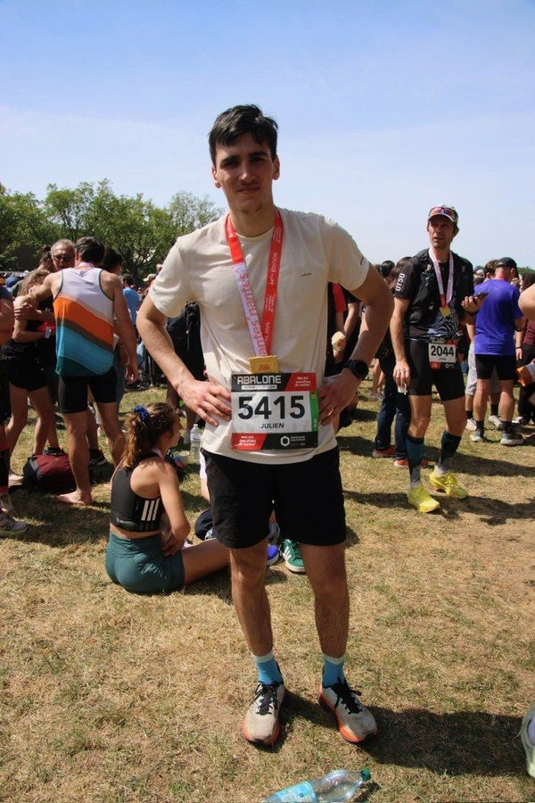

Endurance et rigueur, sur le terrain comme à l'établi
Des engagements qui forgent les qualités que j'apporte à mon métier.
Engagement
Réserve militaire
Après une préparation militaire terre, puis une préparation militaire marine à Orléans, je me suis engagé dans la réserve opérationnelle de l'armée de terre : plusieurs périodes par an consacrées à des missions aux côtés des militaires d'active, en parallèle de mes études et de mon travail.
préparations militaires terre et marine
de promotion de la PMM
défilé commémoratif à Orléans
Discipline
Tenir un engagement sur la durée, à l'entraînement comme en mission, sans faire de compromis sur la rigueur.
Endurance
Rester efficace sur un effort long - que ce soit un triathlon ou un projet d'industrialisation qui s'étale sur plusieurs mois.
Esprit d'équipe
Savoir s'intégrer et coopérer sous contrainte, en mission comme en atelier avec les équipes de production.
Sport
Triathlon & course à pied
Le triathlon et la course à pied, après plusieurs années de sports de combat et d'athlétisme.
de judo
d'athlétisme
de jiu-jitsu brésilien
Persévérance
Ne pas lâcher dans les séances difficiles - comme quand une solution technique ne fonctionne pas du premier coup.
Organisation
Planifier des semaines d'entraînement sur trois disciplines, avec la même méthode que pour mener un projet.
Maîtrise de soi
Les sports de combat apprennent à garder son calme sous pression et à respecter un cadre.

Envie d'en savoir plus ?
Retrouvez mon parcours professionnel, ou contactez-moi directement.